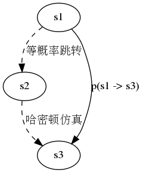
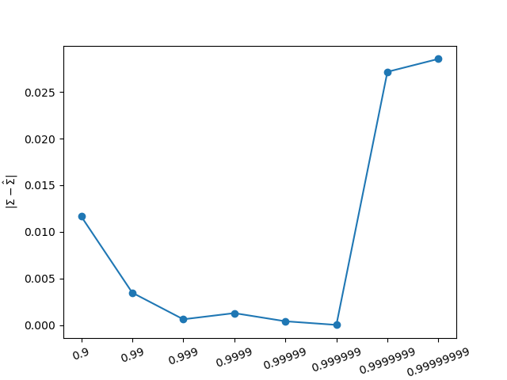

在《多粒子哈密顿仿真》一文中，我们讨论了带粒子碰撞的哈密顿仿真，但没有涉及抽样。
粒子碰撞的确能交换能量，这使得不同的粒子具有不同的并且可以变化的总能量。多样化的总能量使得算法不必押宝于一个单一的总能量。
然而这也带来了一个弊端，一个粒子碰撞前后的总能量不同，不能再假设碰撞前后两个状态之间的相互跳转概率相同。因此无法再利用《实现哈密顿蒙特卡洛(1)》中介绍的接受概率公式，因此也就无法实现正确的抽样。
为了解决这个问题，我们只需要使得“碰撞”前后的任何状态都等概率出现即可。因此可以实现一个虚拟的“碰撞”，实质上是重新分配能量，使得其出现的概率相同,其目的是实现等概率跳转。
具体过程可以借助于物理模型，进行说明。
假设系统有N个粒子，每个粒子有3个坐标和3个动量，因此系统总共有6N个维度。
所有粒子的动能和势能之和为已知常数:
\[\sum\limits_{i=1}^N \frac{p_{i1}^2+p_{i2}^2+p_{i3}^2}{2}+U(q_{i1},q_{i2},q_{i3})=\text{const.}\]
对于已知所有粒子位置的情况下，约束变为：
\[\sum\limits_{i=1}^N \frac{p_{i1}^2+p_{i2}^2+p_{i3}^2}{2}=\text{c}.\]
3N个动量标量是对称的，在位置确定的情况下，这些动量值均匀分布分布位于一个3n-1的超球上。
如果“碰撞”后的动量从这个3n-1超球上均匀选取的话，就能保证从任何一个动量（状态1）到任意其它动量(状态２)的跳转概率相同。在碰撞后，经过一个哈密顿仿真，从状态2再跳转到状态3。由于哈密顿仿真不改变总能量，因此状态2和状态3的总能量相同，状态2和状态3的相互跳转概率相同。因此状态1和状态3之间的相互跳转概率相同。 从而仍然可以利用接受概率公式进行抽样。

至此，我们就到达了一个重要的分水岭位置，即我们可以实现多个粒子的哈密顿蒙特卡洛抽样，而且不必实现粒子的碰撞检测算法。
与以前一样，我们仍然需要设置总能量，但此时只需要设置所有粒子的总能量之和，这个总能量在各个粒子之间的分配则是由算法自动实现的。显然这比为单独粒子设置总能量要稳定得多。
实现的代码片段如下：
xStar = x[-1] # 重新生成动量 p0 = np.random.randn(D, POINTS) # 计算原来的总势能和新的总势能 K0 = H - U(xStar).sum() K1 = K(p0).sum() # 设置动量半径 r0 = np.sqrt(K1/K0) pStar = p0 / r0 # 基于位置变化的哈密顿仿真 zStar = x2z(xStar) E = [U(xStar)] for s in range(STEPS): zStar = zStar + dt*dK(pStar) pStar = pStar - dt*np.dot(cov_hat_half, dU(z2x(zStar)))
我们使用一系列从一般到高度奇异的协方差进行测试： \[ \Sigma = \begin{bmatrix}1&K\\K&1\\\end{bmatrix}\]
以下是驱动代码。采用的衡量标准是估计的协方差和真值之间的距离。这种方式可能不够理想，但属于定量比较，因此更为客观。
dt = .000001 POINTS = 100 EPISODE = 10000 BURNIN = int(EPISODE/2) R = 0.2 D = 2 n = POINTS STEPS = 5 K = [.9, .99, .999, .9999, .99999, .999999, .9999999, .99999999, .999999999, .9999999999,] ds = [] for i in range(len(K)): k = K[i] SIGMA = np.array([[1, k],[k, 1]]) U = lambda x: np.sum(x * np.linalg.solve(SIGMA,x), axis = 0)/2 dU = lambda x: np.linalg.solve(SIGMA, x) np.random.seed(12345) info = ghmc(U, dU, D=D, dt=dt,EPISODE=EPISODE, POINTS=POINTS,VERBOSE=False) x = info['x'] d0 = np.sum(np.square(np.cov(np.transpose(x[int(POINTS*EPISODE/2):,:])) - SIGMA)) ds.append(d0) plt.plot(ds,'o-') plt.xlabel('k') plt.xticks(list(range(len(K))), [str(i) for i in K], rotation=20) plt.ylabel(r'$\left|\Sigma - \hat \Sigma\right|$') plt.show()
如果与基于坐标变换的哈密顿蒙特卡洛文中的实验结果进行对比，就会发现，又多得到几位数字精度。
